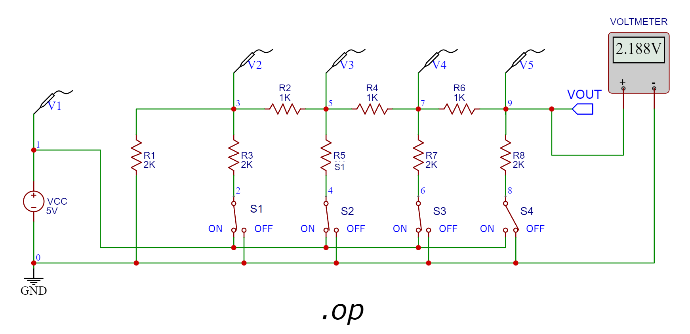
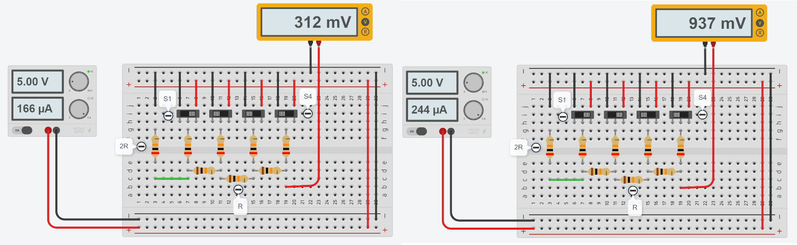

การฝึกต่อวงจรบนเบรดบอร์ด: วงจร R-2R#
บทความนี้กล่าวถึง โจทย์สำหรับการฝึกต่อวงจรบนเบรดบอร์ดโดยใช้ตัวต้านทานและสวิตช์แบบ SPDT หลายตัว ตามรูปแบบของวงจรที่เรียกว่า R-2R และการต่อวงจรใช้งานร่วมกับบอร์ด Arduino
Keywords: Circuit Simulation, R-2R Circuit, Arduino Uno, Tinkercad Circuits, EasyEDA
- วงจร R-2R และการจำลองการทำงานด้วย EasyEDA
- การวิเคราะห์วงจรด้วยวิธีโหนด (Nodal Analysis)
- การเพิ่มวงจรบัฟเฟอร์สำหรับเอาต์พุตโดยใช้ไอซี Op-Amp
- การเขียนโค้ด Python เพื่อช่วยในการหาคำตอบ
- การจำลองการทำงานด้วยซอฟต์แวร์ Tinkercad Circuits
- การต่อวงจรควบคุมด้วยบอร์ดไมโครคอนโทรลเลอร์ Arduino
- ตัวอย่างวงจรสำหรับการทดลองเพิ่มเติม
▷ วงจร R-2R และการจำลองการทำงานด้วย EasyEDA#
วงจร R-2R (หรือเรียกว่า R-2R Ladder Network) ประกอบด้วย
1) สวิตช์แบบ SPDT (Single Pole, Double Throw) หรือ "สวิตช์เลื่อนแบบสองทาง" (Slide Switch) ที่ใช้ในการเชื่อมต่อจากจุดหนึ่งไปยังอีกจุดหนึ่งที่มีให้เลือกอยู่สองตำแหน่งและเลือกจุดใดจุดหนึ่ง 2) ตัวต้านทานหลายตัวที่มีการเลือกใช้ค่าความต้านทานอยู่ 2 ค่า คือ และ (เช่น และ เป็นต้น)
แล้วนำมาต่อกันตามรูปแบบเฉพาะตามผังวงจรต่อไปนี้ (วาดผังวงจรโดยใช้ซอฟต์แวร์ EasyEDA) แรงดันไฟฟ้าเอาต์พุต (VOUT) ที่ได้ จะขึ้นอยู่กับตำแหน่งการเลือกของสวิตช์แต่ละตัว
รูป: ผังวงจร R-2R ที่ประกอบด้วยตัวต้านทาน และ และมีสวิตช์แบบสองทาง (จำนวน 4 ตัว)
วงจรประเภทนี้สามารถนำไปใช้ในการสร้างวงจรอิเล็กทรอนิกส์ที่เรียกว่า Bit-Parallel DAC (Digital-to-Analog Converter) โดยที่สวิตช์ไฟฟ้าแบบ SPDT จะถูกแทนที่ด้วยวงจรที่ทำหน้าที่สร้างสัญญาณควบคุม ซึ่งเป็นสัญญาณแบบดิจิทัล และมีค่าลอจิกเป็น 0 (LOW) หรือ 1 (HIGH) เช่น ได้จากขาเอาต์พุตของไมโครคอนโทรลเลอร์
ดังนั้นการกำหนดค่าของสัญญาณควบคุม จะเป็นตัวเลือกระดับของแรงดันไฟฟ้าเอาต์พุต เช่น ถ้ามี 4 บิต ก็จะมีระดับแรงดันเอาต์พุตที่เป็นไปได้ ระดับ และมีระยะห่างกันคงที่
ถัดไปเป็นตัวอย่างการวิเคราะห์และจำลองการทำงานของวงจรโดยใช้ซอฟต์แวร์ EasyEDA ในวงจรนี้ได้กำหนดให้ VCC เป็นแรงดันไฟฟเลี้ยงและมีค่าเท่ากับ +5VDC ถ้าให้ จะได้ระดับแรงดันไฟฟ้าต่ำสุดสำหรับ แต่มากกว่าศูนย์ คือ

รูป: ตัวอย่างการจำลองการทำงานเมื่อสวิตช์ อยู่ในตำแหน่ง ตามลำดับ
จากผลการจำลองการทำงานด้วย LTspice Circuit Simulator ของซอฟต์แวร์ EasyEDA จะเห็นได้ว่า มีการแสดงค่าแรงดันไฟฟ้าของจุดต่าง ๆ ในวงจร ตามที่กำหนดไว้โดยโพรบวัดแรงดันไฟฟ้า (Voltage Probes) ซึ่งได้แก่ โดยที่ และ และใช้แรงดันไฟเลี้ยงของวงจร หรือ เท่ากับ 5V
รูป: ตัวอย่างผลการจำลองการทำงานและวิเคราะห์วงจรด้วย EasyEDA / LTspice
และได้ค่าสำหรับ เท่ากับ 3.1250e-1V หรือ
หรือคำนวณค่าตามทฤษฎีได้จาก

รูป: ตัวอย่างการจำลองการทำงานเมื่อสวิตช์อยู่ในตำแหน่ง หรือคำนวณค่าตามทฤษฎีได้จาก
รูป: ตัวอย่างการจำลองการทำงานเมื่อสวิตช์อยู่ในตำแหน่ง หรือคำนวณค่าตามทฤษฎีได้จาก
▷ การวิเคราะห์วงจรด้วยวิธีโหนด (Nodal Analysis)#
ถ้ากำหนดแรงดันไฟฟ้าของโหนดตามหมายเลขที่เขียนกำกับไว้ในผังวงจร เช่น และเขียนสมการสำหรับแต่ละโหนดหมายเลข โดยใช้ทฤษฎีของ KCL (Kirchhoff's Circuit Law) จะได้ 4 สมการต่อไปนี้
โดยที่
ดังนั้นจึงเขียนระบบสมการได้ใหม่เป็น
แรงดันไฟฟ้าที่จุดอ้างอิง หรือ โหนดหมายเลข ขึ้นอยู่กับตำแหน่งของสวิตช์ (ให้มองว่าเป็น ค่าคงที่แบบไบนารี มีค่าเป็น 0 หรือ 1) เพื่อจะเลือกว่า จะเชื่อมต่อกับ GND (0V) หรือ VCC (+5V) ดังนั้น จึงถูกกำหนดให้เป็นค่าคงที่ แต่ละตัวมีค่าเป็น 0V หรือ VCC อย่างใดอย่างหนึ่ง ดังนั้น จึงเป็นตัวแปรที่ยังไม่ทราบค่า (Unknown Variables) แต่เนื่องจากมี 4 สมการ และมี 4 ตัวแปร ดังนั้นจึงสามารถแก้ระบบสมการเชิงเส้นเพื่อหาคำตอบได้
สูตรการหาแรงดันไฟฟ้า ที่ขึ้นอยู่กับตำแหน่งของสวิตช์แต่ละตัว มีดังนี้
ถ้าพิจาณาว่า วงจรนี้เป็นแหล่งจ่ายแรงดันไฟฟ้ากระแสตรงและมีความต้านทานภายใน และต้องการหาวงจรสมมูลของเทวินิน (Thevenin's Equivalent Circuit) โดยใช้โหนดหมายเลข 9 และ 0 ในวงจรเป็นจุดอ้างอิง ก็สามารถหาแหล่งจ่ายแรงดันเทวินิน () อนุกรมกับตัวต้านทานเทวินิน () ดังนี้
- จะได้เท่ากับ จากสูตรการคำนวณข้างบน ซึ่งเป็นผลต่างแรงดันไฟฟ้าระหว่างจุดหมายเลข 9 กับ 0 (ยังไม่มีโหลดใด ๆ มาต่อ)
- สามารถคำนวณได้โดยการแทนที่แหล่งจ่าย ในวงจรด้วยลวดตัวนำไฟฟ้า และคำนวณค่าความต้านทานรวมระหว่างจุดหมายเลข 9 กับ 0 ในวงจร สวิตช์แต่ละตัวจะอยู่ในตำแหน่ง ON หรือ OFF ก็ตาม ปลายด้านหนึ่งของตัวต้านทาน จะต่อไปยังจุดเดียวกัน ดังนั้นเมื่อคำนวณค่าความต้านทานรวมจะได้
รูป: การคำนวณหาตัวต้านทานเทวินิน (จะได้ )
▷ การเพิ่มวงจรบัฟเฟอร์สำหรับเอาต์พุตโดยใช้ไอซี Op-Amp#
ถ้าต้องการนำไอซี Op-Amp เช่น LM358 มาต่อเป็นวงจรบัฟเฟอร์สำหรับเอาต์พุต (Output Buffer) หรือเรียกว่า Voltage Follower ก็มีแนวทางดังนี้
รูป: การเพิ่มวงจรบัฟเฟอร์สำหรับเอาต์พุตโดยใช้ไอซี LM358 (Op-Amp) และเลือกใช้ แทนที่ค่าตัวอย่าง
ข้อสังเกต: ไอซี LM385 ไม่ใช่ไอซี Rail-to-Rail Op-Amp และมีค่า Input Common Mode Voltage (ICMV) สูงสุด ประมาณ หรือกล่าวได้ว่า แรงดันเอาต์พุตจะอยู่ในช่วง ถึง ดังนั้นจึงต้องใช้แรงดันไฟเลี้ยง ของไอซี ให้สูงกว่า VCC=+5V
▷ การเขียนโค้ด Python เพื่อช่วยในการหาคำตอบ#
ถัดไปเป็นตัวอย่างการเขียนโค้ด Python โดยใช้โมดูล SymPy
(ใช้คำสั่ง pip install sympy สำหรับการติดตั้ง)
สำหรับการวิเคราะห์และหาคำตอบของระบบสมการเชิงเส้นซึ่งในกรณีนี้ก็คือ
การหาแรงดันไฟฟ้าที่จุดต่าง ๆ เทียบกับ GND ของวงจร
from sympy import *
# declare symbols for circuit parameters
VCC, R = symbols("VCC R")
S1,S2,S3,S4 = symbols("S_1 S_2 S_3 S_4" )
v1,v2,v3,v4,v5 = symbols("v_1 v_2 v_3 v_4 v_5")
v6,v7,v8,v9 = symbols("v_6 v_7 v_8 v_9")
# set switch positions
switch_params = {S1:1,S2:0,S3:0,S4:0}
# write the equations derived from Nodal Analysis
eqs = [
Eq( (-v3)/(2*R) + (v2-v3)/(2*R), (v3-v5)/R ),
Eq( (v3-v5)/R + (v4-v5)/(2*R), (v5-v7)/R ),
Eq( (v5-v7)/R + (v6-v7)/(2*R), (v7-v9)/R ),
Eq( (v7-v9)/R + (v8-v9)/(2*R), 0 ) ]
# define a list of unknown variables
unknowns = [v3,v5,v7,v9]
params = {v2:S1*VCC,v4:S2*VCC,v6:S3*VCC,v8:S4*VCC}
eqn = [eq.subs(params) for eq in eqs]
# show the equations
print('Equations:')
for eq in eqn:
print( '{} = {}'.format(eq.lhs, eq.rhs))
print('-'*20)
# substitute the switch settings for S1..S4 in the equation
eqn = [eq.subs(switch_params) for eq in eqn]
# solve the linear equation system to find the solution
sol = solve( eqn, unknowns )
for k in sol.keys():
print(k, '=', sol[k])
print('-'*20)
for k in sol.keys():
print(k, '=', float(sol[k].subs({VCC:5})), 'V')
ตัวอย่างข้อความเอาต์พุตจากการทำงานของโปรแกรม สำหรับกรณีที่กำหนดให้สวิตช์ มีสถานะเป็น ตามลำดับ
Equations:
-v_3/(2*R) + (S_1*VCC - v_3)/(2*R) = (v_3 - v_5)/R
(v_3 - v_5)/R + (S_2*VCC - v_5)/(2*R) = (v_5 - v_7)/R
(v_5 - v_7)/R + (S_3*VCC - v_7)/(2*R) = (v_7 - v_9)/R
(v_7 - v_9)/R + (S_4*VCC - v_9)/(2*R) = 0
--------------------
v_3 = 43*VCC/128
v_5 = 11*VCC/64
v_7 = 3*VCC/32
v_9 = VCC/16
--------------------
v_3 = 1.6796875 V
v_5 = 0.859375 V
v_7 = 0.46875 V
v_9 = 0.3125 V
และจะได้ เป็นคำตอบ
ตัวอย่างข้อความเอาต์พุตจากการทำงานของโปรแกรม สำหรับกรณีที่กำหนดให้สวิตช์ มีสถานะเป็น ตามลำดับ
Equations:
-v_3/(2*R) + (S_1*VCC - v_3)/(2*R) = (v_3 - v_5)/R
(v_3 - v_5)/R + (S_2*VCC - v_5)/(2*R) = (v_5 - v_7)/R
(v_5 - v_7)/R + (S_3*VCC - v_7)/(2*R) = (v_7 - v_9)/R
(v_7 - v_9)/R + (S_4*VCC - v_9)/(2*R) = 0
--------------------
v_3 = 77*VCC/128
v_5 = 45*VCC/64
v_7 = 21*VCC/32
v_9 = 7*VCC/16
--------------------
v_3 = 3.0078125 V
v_5 = 3.515625 V
v_7 = 3.28125 V
v_9 = 2.1875 V
และจะได้ เป็นคำตอบ
▷ การจำลองการทำงานด้วยซอฟต์แวร์ Tinkercad Circuits#
ถัดไปเป็นตัวอย่างการฝึกต่อวงจรบนเบรดบอร์ดเสมือนจริง โดยใช้ซอฟต์แวร์ AUTODESK Tinkercad Circuits ซึ่งมีข้อดี เช่น การจำลองการทำงานของวงจรแบบ Interactive เมื่อเริ่มต้นขั้นตอน Simulation ผู้ใช้สามารถเปลี่ยนตำแหน่งของสวิตช์เลื่อนได้
วงจรนี้ใช้แหล่งจ่ายแรงดันคงที่ +5V และใช้มัลติมิเตอร์ (โวลต์มิเตอร์) วัดแรงดันไฟฟ้าเอาต์พุตของวงจร เมื่อกำหนดตำแหน่งของสวิตช์ SPDT (S1, ..., S4)
รูป: ตัวอย่างการต่อวงจรเสมือนจริงสำหรับวงจร R-2R โดยใช้ Tinkercad
ตัวอย่างผลการจำลองการทำงานมีดังนี้

รูป: เมื่อสวิตช์ S1,S2,S3,S4 (เรียงจากซ้ายไปขวา) อยู่ในตำแหน่ง "1000" และ "1100" ตามลำดับ
รูป: เมื่อสวิตช์ S1,S2,S3,S4 (เรียงจากซ้ายไปขวา) อยู่ในตำแหน่ง "0001" และ "1111" ตามลำดับ
▷ การต่อวงจรควบคุมด้วยบอร์ดไมโครคอนโทรลเลอร์ Arduino#
ซอฟต์แวร์ Tinkercad Circuits รองรับการต่อวงจรโดยใช้บอร์ด Arduino Uno ซึ่งเป็นบอร์ดไมโครคอนโทรลเลอร์ และเขียนโค้ดในภาษา C/C++ ในรูปแบบที่เรียกว่า Arduino Sketch
ดังนั้นในตัวอย่างนี้เป็นการสาธิตการต่อวงจร R-2R บนเบรดบอร์ดเสมือนจริง ร่วมกับบอร์ด Arduino Uno โดยใช้ขาสัญญาณดิจิทัล เช่น D3, D4, D5, D6 ตามลำดับ เป็นขาเอาต์พุตแทนการใช้สวิตช์เลื่อน S1, S2, S3, S4
ดังนั้นถ้าเขียนโปรแกรม Arduino Sketch กำหนดสถานะลอจิกของขาดิจิทัล 4 ขา ให้แต่ละขามีสถานะลอจิก 0 (OFF) หรือ 1 (HIGH) ก็จะให้ผลเหมือนการเลือกตำแหน่งของสวิตช์เลื่อนแต่ละตัว มีทั้งหมด 16 ตำแหน่ง หรือ ค่าที่แตกต่างกัน (มองเป็นข้อมูลดิจิทัล ขนาด 4 บิต จะได้ "0000" ถึง "1111")
เมื่อมีการกำหนดสถานะลอจิกของขาเอาต์พุตทั้ง 4 ขา แล้วแรงดันเอาต์พุตของวงจรจะถูกวัดและแสดงผลด้วยโวลต์มิเตอร์ นอกจากนั้นแล้วยังเห็นว่า มีการเชื่อมต่อสายไฟไปยังขา A0 บนบอร์ด Arduino ซึ่งขาดังกล่าวเป็นขาอินพุต-แอนะล็อก และใช้กับสัญญาณอินพุตที่มีระดับแรงดันไฟฟ้าอยู่ในช่วง 0V .. +5V และการใช้งานขาอินพุต-แอนะล็อกนี้ ก็สามารถใช้ในการวัดระดับแรงดันไฟฟ้า โดยใช้วงจรที่เรียกว่า ADC (Analog-to-Digital Converter) ของชิปไมโครคอนโทรลเลอร์ที่อยู่บนบอร์ด Arduino Uno
รูป: การต่อวงจรบนเบรดบอร์ดร่วมกับบอร์ด Arduino Uno
ตัวอย่างโค้ดสาธิตการกำหนดค่าเอาต์พุต 4 ขา (ขาหมายเลข 3,4,5,6) สำหรับวงจร R-2R และการอ่านค่าจากขาอินพุต-แอนะล็อก (ขาหมายเลข A0) แล้วแปลงเป็นตัวเลขสำหรับระดับแรงดันไฟฟ้า
การทำงานของโค้ด จะใช้ค่าคงที่ตามที่ได้กำหนดไว้ในอาร์เรย์ TEST_BITS ซึ่งมีหลายกรณี
แต่ละกรณีจะมีค่าตัวเลข 4 บิต (มีค่าเป็น 0 หรือ 1) เพื่อนำไปใช้กำหนดสถานะลอจิกของเอาต์พุต 4 ขา
สำหรับวงจร R-2R DAC และส่งผลต่อระดับแรงดันไฟฟ้าของวงจรดังกล่าว
เมื่อกำหนดค่าเอาต์พุต 4 ขา แล้ว ก็จะอ่านค่าจากขาอินพุต-แอนะล็อกแล้วแปลงเป็นระดับแรงดันไฟฟ้า (มิลลิโวลต์) ส่งค่าดังกล่าวออกทางพอร์ต Serial ในขั้นตอนนี้มีการทำซ้ำ 4 ครั้ง ก่อนจะเปลี่ยนระดับแรงดันไฟฟ้าของวงจร R-2R DAC ในลำดับถัดไป
// Constant declarations
const int ADC_PIN = A0; // Analog input pin
const int NUM_PINS = 4; // Number of R-2R DAC output pins
const int DAC_PINS[] = { 3,4,5,6 }; // Pins used for R-2R DAC outputs
const float VREF = 5000.0f; // Analog voltage reference on Uno board
const byte TEST_BITS[][NUM_PINS] = {
// LSB ... MSB
{1,0,0,0}, // -> 312.5 mV
{1,1,0,0}, // -> 937.5 mV
{0,0,0,1}, // -> 2500.0 mV
{0,0,1,1}, // -> 3750.0 mV
{1,1,1,1}, // -> 4687.5 mV
{0,0,0,0}, // -> 0000.0 mV
};
// Number of test cases given above
const int NUM_CASES = sizeof(TEST_BITS)/sizeof(TEST_BITS[0]);
// User-defined function used to update the DAC output pins
void writeDAC( const byte bits[] ) {
for ( int i=0; i < NUM_PINS; i++ ) {
digitalWrite( DAC_PINS[i], bits[i] );
}
}
void setup() {
// Initialize the Serial
Serial.begin(115200);
// Set the direction of R-2R DAC pins to output
for (int i=0; i < NUM_PINS; i++) {
int pin = DAC_PINS[i];
pinMode( pin, OUTPUT);
digitalWrite( pin, LOW );
}
}
void loop() {
for ( int i=0; i < NUM_CASES; i++ ) { // for each test case
writeDAC( TEST_BITS[i] ); // Update the R-2R DAC output pins
for ( int j=0; j < 4; j++ ) { // Repeat 4 times
// Read the analog input pin
int analogValue = analogRead( ADC_PIN );
// Convert the ADC value to voltage level (in mV)
float mV = (analogValue * VREF) / 1024;
// Send the millivolt value as a string to the Serial
Serial.println( mV );
}
delay(1000);
}
}
รูป: การจำลองการทำงาน
▷ ตัวอย่างวงจรสำหรับการทดลองเพิ่มเติม#
อีกวงจรหนึ่งที่สามารถนำมาศึกษาทดลองเพิ่มเติม เป็นวงจรแบ่งแรงดันโดยใช้ตัวต้านทาน มีการนำไปใช้งานเป็นส่วนหนึ่งของวงจร Resistor DAC (Digital-to-Analog Converter) เพื่อสร้างสัญญาณเชื่อมต่อกับ VGA (Video Graphics Array) และกำหนดค่าสี R=Red, G=Green, B=Blue สำหรับจอมอนิเตอร์ของคอมพิวเตอร์ในอดีต จำนวนบิตที่ใช้อาจแตกต่างกันและจำนวนสีที่แตกต่าง เช่น
- R=3,G=3,B=2: 8 บิต สำหรับ 256 สี
- R=6,G=6,B=6: 18 บิต สำหรับ 262,144 สี
- R=8,G=8,B=8: 24 บิต สำหรับ 16,777,216 สี
วงจรตามผังตัวอย่างต่อไปนี้ ใช้สวิตช์เลื่อน S0,S1,S2 เพื่อเลือกระดับแรงดันอินพุตระหว่าง 0V หรือ VCC=5V ดังนั้นจะมีระดับแรงดันเอาต์พุตเมื่อวัดด้วยมัลติมิเตอร์ (โวลต์มิเตอร์) ได้แตกต่างกัน 8 ระดับ และมีความละเอียด 3 บิต
รูป: ผังวงจรสำหรับการทดลอง (วาดผังวงจรด้วย EasyEDA) และใช้มัลติมิเตอร์วัดแรงดันเอาต์พุต
เริ่มต้นให้สวิตซ์ทั้งสามตัวอยู่ในตำแหน่ง S0=S1=S2=Open ดังนั้นจะได้แรงดันไฟฟ้า 0V
รูป: การจำลองการทำงาน S0=Close, S1=Open, S2=Open
เมื่อสวิตช์อยู่ในตำแหน่ง S0=Close, S1=Open, S2=Open จะได้ V0=5V, V1=0V, V2=0V และสามารถคำนวณแรงดันไฟฟ้าเอาต์พุตได้ดังนี้
รูป: ตัวอย่างการคำนวณหาแรงดันเอาต์พุตสำหรับกรณี S0=Close, S1=Open, S2=Open
เมื่อสวิตช์อยู่ในตำแหน่ง S0=Open, S1=Close, S2=Close จะได้ V0=0V, V1=5V, V2=5V และสามารถคำนวณแรงดันไฟฟ้าเอาต์พุตได้ดังนี้
รูป: การจำลองการทำงาน S0=Open, S1=Close, S2=Close
สวิตช์ทั้งสามตัวในวงจรดังกล่าว สามารถถูกแทนที่ได้ด้วยขาเอาต์พุต-ดิจิทัล 3 ขา ของบอร์ดไมโครคอนโทรลเลอร์ Arduino และเขียนโปรแกรม Arduino Sketch กำหนดสถานะของลอจิกดังกล่าว เพื่อให้ได้ระดับแรงดันเอาต์พุตที่แตกต่างกันได้ 8 กรณี
รูป: ตัวอย่างการต่อวงจรเสมือนจริงด้วย AUTODESK Tinkercad
รูป: ตัวอย่างการจำลองการทำงาน
โจทย์การทดลอง
- สร้างวงจรเสมือนจริงตามผังวงจร แต่ให้ใช้ค่า R2=560, R1=1.2k, R0=2.2k และ R3=75 โอห์ม
- จงเขียนโค้ด Arduino Sketch เพื่อกำหนดค่าลอจิกให้ขาเอาต์พุต
D3, D4 และ D5 ของ Arduino Uno
โดยใช้คำสั่ง
digitalWrite()ให้ได้ 8 กรณี เว้นระยะเวลาประมาณ 1 วินาที ก่อนเปลี่ยนค่าในแต่ละกรณี - ในแต่ละกรณีให้วัดค่าแรงดันเอาต์พุต (Vout) ที่ได้
โดยใช้ขาอินพุต-แอนะล็อก A0 และใช้คำสั่ง
analogRead()อ่านค่าตัวเลขแล้วแปลงค่าแรงดันไฟฟ้าหน่วยเป็นมิลลิโวลต์ ส่งเป็นข้อความจากบอร์ด Uno โดยใช้คำสั่งSerial.println()หนึ่งบรรทัดต่อหนึ่งค่าจากการวัดค่าในแต่ละกรณี และทำขั้นตอนซ้ำไปเรื่อย ๆ
คำถามจากการทดลอง:
- แรงดันเอาต์พุตที่วัดได้จากการใช้บอร์ด Arduino Uno ในแต่ละกรณี มีค่าใกล้เคียงกับค่าที่ได้จากการวัดด้วยมัลติมิเตอร์เสมือนจริงหรือไม่ ?
- แรงดันเอาต์พุตสูงสุดที่วัดได้จากการใช้บอร์ด Arduino Uno มีค่ากี่โวลต์ และเป็นไปตามค่าที่คำนวณได้ตามทฤษฎีหรือไม่ ?
▷ กล่าวสรุป#
บทความนี้นำเสนอตัวอย่างโจทย์ฝึกปฏิบัติโดยนำตัวต้านทานและสวิตช์ไฟฟ้ามาต่อวงจรบนเบรดบอร์ด มีการใช้ซอฟต์แวร์ EasyEDA และ AUTODESK Tinkercad Circuits สำหรับการจำลองการทำงานของวงจร และมีตัวอย่างโค้ด Python ที่ช่วยในการหาคำตอบ รวมถึงตัวอย่างการใช้งานร่วมกับบอร์ด Arduino Uno พร้อมโค้ดตัวอย่างสาธิตการทำงานในเบื้องต้น
This work is licensed under a Creative Commons Attribution-ShareAlike 4.0 International License.
Created: 2023-01-14 | Last Updated: 2023-12-27